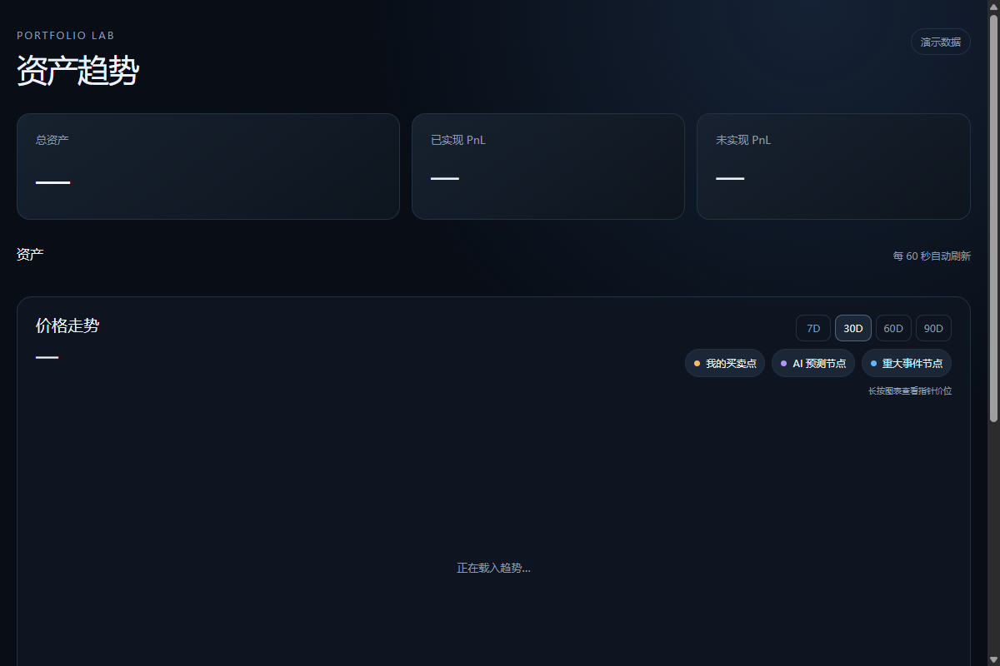
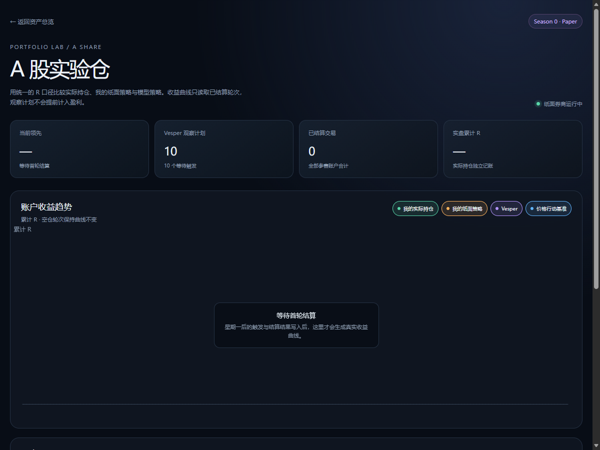

网页端大模型只负责生成假设
- ✓
在网页端消费收盘特征数据包（Packet）
- ✓
输出严格受限的结构化假设（
prediction.v1） - ✓
定义入场触发、失效点、目标位与失效原因
- ✕
没有真实账户授权，也不能读取未写入 Packet 的账户信息
- ✕
无法触发任何下单、撤单或划转动作
让模型做判断，
让确定性系统负责执行与记账。
一个本地运行的多资产看板与 A 股盘中纸面撮合实验台。把大模型生成的交易假设限制在严格的规则系统内，验证“AI 给出的交易计划到底有没有参考价值”。
平时会记录自己的投资账户，也想比较个人判断与 AI 纸面策略的结果。但我很快发现，市面上的“AI 炒股”大多停留在生成一段分析报告，或者在历史行情里挑几段拟合得漂亮的走势。
如果缺少统一的复盘口径，模型给出的交易计划根本没办法客观评价：
没有 A 股 T+1 锁仓约束，AI 就会假定买入后当天随时可以止损逃顶；没有固定佣金与印花税，高频开仓看起来笔笔都赚；没有保守的成交价格判定，回测里的每一次“突破”都会被算在最完美的极值点。
为了搞清楚“AI 给出的交易判断到底有没有参考价值”，我开始搭建一个可复核的确定性环境。核心原则只有一条：绝不让模型碰真实资金，把模型预测与执行记账彻底解耦。
这个项目从第一天起就定下了安全边界：不做全自动交易 Agent，不接任何真实券商写接口。
在网页端消费收盘特征数据包（Packet）
输出严格受限的结构化假设（prediction.v1）
定义入场触发、失效点、目标位与失效原因
没有真实账户授权，也不能读取未写入 Packet 的账户信息
无法触发任何下单、撤单或划转动作
只读 API：OKX 仅开启 Read 权限读取 BTC 永续快照
硬编码 Schema 与价格逻辑校验（Entry/SL/TP 顺序）
分钟级行情定时轮询与保守模拟撮合（simulated_fill）
A 股 T+1 锁仓、佣金、印花税硬规则扣除
状态机持久化（state.json 与 events.jsonl）
这种划分让整个实验变得极其安全：即便大模型在网页端产生了幻觉、输出了离谱的价格，本地校验层也会直接拒绝接收，绝不会影响底层的账本与持仓状态。
整个系统由“收盘特征生成 → 网页模型推理 → 本地 Schema 校验 → 盘中分钟级撮合 → 积分榜结算”五段确定性管道组成。
liquid_strength 与 vesper_retest 双筛选池，生成最多 12 只候选的不可变数据包（Packet）。
accepted 状态并派生 planned_r。
state.json 与追加式流水 events.jsonl。统一按 R 口径结算实际持仓、个人纸面、模型策略与基准的累计收益。
{
"schema_version": "prediction.v1",
"symbol": "000630.SZ",
"decision": "watch", // watch | no_signal | avoid
"bias": "bullish", // 普通现金账户只执行多头
"entry": {
"type": "breakout", // breakout | pullback | market
"price": 6.83,
"confirmation": "突破平台上沿"
},
"invalidation": { "type": "daily_close_below", "price": 6.58 },
"target": { "price": 7.35 },
"wake_conditions": [{ "field": "price", "operator": ">=", "value": 6.83, "action": "reevaluate" }]
}如果模拟盘不贴近真实市场的摩擦与约束，评估结果就是自欺欺人。我在 Paper Broker 中硬编码了五项关键业务规则：
买入当日（Day T）在 state.json 中强制标记锁定，当天无论行情如何波动均禁止平仓；次交易日（T+1）及之后才允许触发止损、止盈或收盘失效。
is_t_plus_one_unlocked(pos, current_date)
每笔买卖订单固定计收 5 元佣金；仅在卖出平仓时单向计收 0.05% 印花税（买入不收）。杜绝零交易费用的虚假高频收益。
commission = 5.0, stamp_duty = sell_amount * 0.0005
突破买入取 max(entry, open)，绝不占便宜；同一根 1 分钟 K 线内若高低点同时触及止盈与止损，一律止损优先触发，宁可多算亏损。
same_bar_conflict -> trigger stop_loss first
严格按 100 股整手建仓；单笔风险控制在总权益 1%（risk_per_trade: 0.01），且单只标的资金占用上限不超过总净值 20%。
lot_size: 100, max_position_fraction: 0.20
当 AKShare 接口超时、网络断开或行情数据缺失时，撮合引擎保持持仓与账本不变，不猜测成交；预测 ID 与已处理分钟写入状态文件，重复运行同一根 bar 不会重复成交或重复扣费。
在规则引擎的开发过程中，自动化测试抓出了一个隐蔽但极其致命的逻辑漏洞：时间穿越（Look-ahead Bias）。
由于 AKShare 返回的是包含当天历史全部记录的 1 分钟 K 线列表，在盘中轮询撮合时，如果直接把行情数组丢给撮合函数，系统就会拿过去的行情来撮合刚刚生成的预测：
模型在 09:40 刚刚生成的买入预测，撮合循环遍历历史行情时，竟然在 09:35 已经发生的高点上触发了“突破买入”；更糟的是，若行情列表中混入了未来时间的 bar，系统甚至会“预知未来”提前平仓。
在撮合循环前增加双重硬过滤：
1. 严格丢弃所有早于预测生成时间 generated_at 的历史分钟线；
2. 严格丢弃所有晚于当前轮询时间 current_time 的未来分钟线。
用专用测试用例锁定此逻辑，杜绝任何“未卜先知”。
这种问题不会直接报错，界面甚至还能生成一条看似合理的成交记录。但只要预测使用了生成前或当前时间之后的行情，后面的胜率和收益都失去意义。时间边界必须由测试锁死。
系统当前已在本地跑通，完成真实 A 股行情 dry-run 与全套测试验证：

接入 OKX 只读数据查看 BTC 永续仓位与历史成交点，纳指 QQQ 与黄金 XAU/USD 代理日 K 自由缩放。

用统一的 R 口径比较各模型与个人策略，收益曲线仅读取已结算轮次，观察计划不提前计入盈利。
诚实记录当前系统的不足与边界，不把探索项目伪装成金融级商业终端：
虽然系统架构、撮合状态机与自动化测试已完整跑通，但 A 股纸面撮合上线运行时间尚短，样本量仍在持续积累中。目前绝对没有任何数据能够证明大模型的交易假设能够稳定盈利或跑赢大盘。
当前交易时段校验主要覆盖了周一至周五 09:30-11:30、13:00-15:00 的基础时段，对国内股市复杂的调休周末与法定节假日尚未接入自动化交易日历同步，仍需后续补充外部日历服务。
纸面撮合基于 1 分钟 K 线的开高低收模拟，无法还原真实盘口的 Level-2 挂单深度、排队撤单情况以及涨跌停板流动性封死时的极端流动性缺失。
别让大模型直接碰交易，让它在只读和严格确定的规则沙盒里老老实实跑纸面测试。